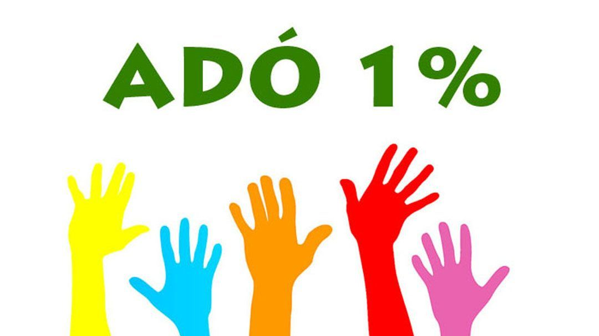

Ajánlja fel Adó-ja 1%-át
Ha még nem tette meg, rendelkezzen adója 1%-áról, ajánlja fel a Mathiász János Alapítványnak!
Az alapítvány évtizedek óta támogatja
- tanulmányutak, kirándulások szervezését;
- a tehetséges tanulók tanulmányi és sportversenyeken való részvételét;
- elősegíti a hátrányos helyzetű tanulók integrációját, együtt nevelését, hátránykompenzációját;
- a diákélet színesítéséhez;
- az iskolai rendezvények minél magasabb színvonalú megvalósítását.
Szervezet hivatalos neve: MATHIÁSZ JÁNOS Alapítvány Balatonboglár
Szervezet adószáma: 18767218-1-14
A szervezet címe:
8630 Balatonboglár, Szabadság utca 41.
Támogatását előre is köszönjük!!!
